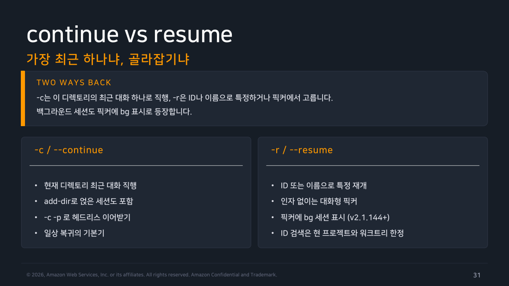
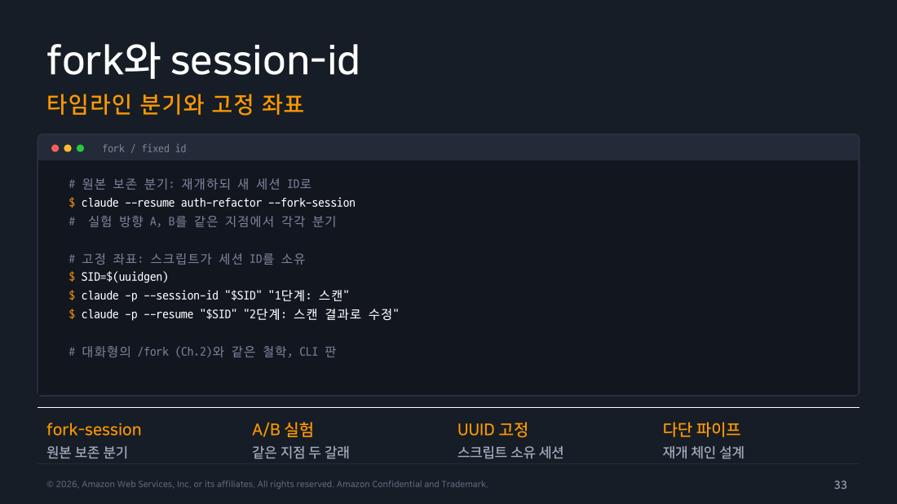
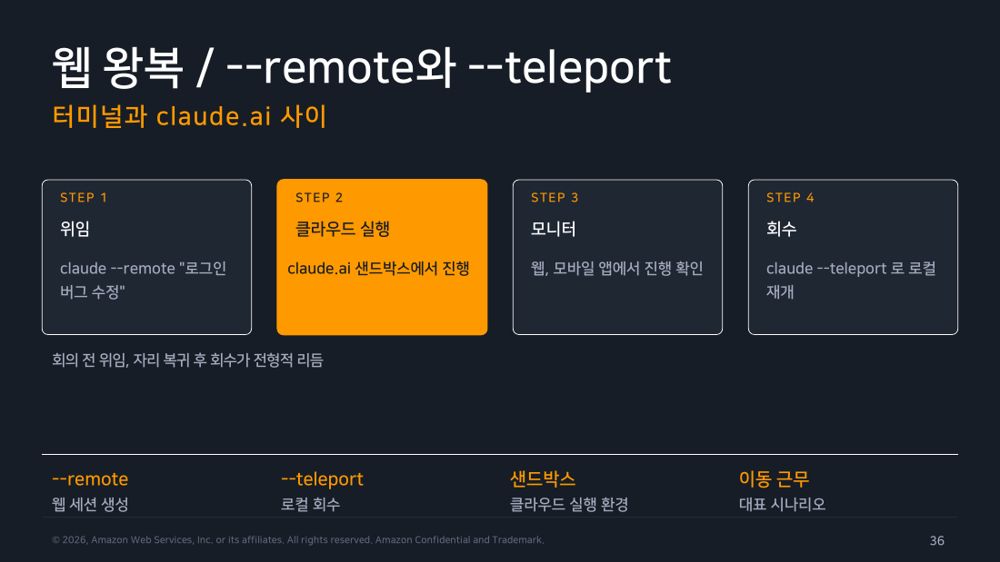

Part 3 — 세션 제어¶
한 줄 요약¶
세션 제어는 최근 대화를 잇는 일, 특정 좌표로 돌아가는 일, 그 좌표에서 새 가지를 내는 일을 구분한다.
왜 알아야 하나¶
자동화가 “이전 맥락을 사용했다”고 말할 때 어떤 세션인지 모르면 재현과 비용 추적이 무너진다. 특히 실험을 원 세션에 이어 쓰면 결론과 이력이 뒤섞인다.
1. continue와 resume의 거리¶
터미널을 다시 열면서 하고 싶은 일은 대개 셋 중 하나다. 플래그 이름을 외우기 전에 이 세 장면부터 머릿속에 잡아 두면 나머지는 붙는다.
- 방금 하던 대화를 그대로 이어가고 싶을 때 — 점심 먹으러 가느라 창을 닫았고 같은 프로젝트 폴더에서 아까 이야기하던 흐름을 그대로 잇고 싶다. 고를 것도 없고 그냥 "아까 그거"면 된다.
- 지난주에 하던 특정 대화로 돌아가고 싶을 때 — 결제 모듈을 손보던 대화가 분명 있었는데 어느 폴더에서 시작했는지가 흐릿하다. 목록을 펼쳐 보고 골라 들어가고 싶다.
- 지금 세션에서 실험을 하나 더 갈라내고 싶을 때 — 지금까지 쌓인 맥락은 그대로 쓰되, 원래 대화는 기준점으로 남겨 두고 다른 방법을 시험해 보고 싶다.
첫 번째가 -c/--continue, 두 번째가 -r/--resume이고 세 번째는 --fork-session이 맡는다(2절에서 따로 본다). 이제 각 장면이 실제로 어떤 범위를 뒤지는지가 남는데, 실측 도움말과 공식 문서를 겹쳐 보면 첫 번째와 두 번째의 검색 범위가 다르다는 게 드러난다.
-c/--continue는 현재 디렉터리의 가장 최근 대화로만 직행한다. 여기서 말하는 "최근"에는 조건이 붙는데, 백그라운드 세션·-p 세션·첫 프롬프트가 /loop였던 세션은 일부러 제외한다. 스크립트가 돌린 자동 실행 기록이 "아까 그거" 자리를 차지해 버리지 않도록, 사람이 대화형으로 이어 쓸 법한 세션만 골라 주는 셈이다.
반면 -r/--resume [value]는 두 가지로 쓴다. 세션 ID나 이름을 값으로 직접 지정하면 그 좌표로 바로 들어가고 값 없이 실행하면 선택기가 열린다. 이 선택기가 두 번째 장면의 답인데, 현재 프로젝트 디렉터리 → 그 git worktree들 → 그 밖의 모든 프로젝트 순으로 뒤지기 때문에 폴더를 잘못 기억하고 있어도 결국 목록에 걸린다. 백그라운드로 돌고 있는 세션도 bg 표시를 달고 목록에 올라온다.
--session-id <uuid>만 계보가 다르다. 앞의 둘이 이미 있는 대화를 찾아 들어가는 플래그라면, 이건 새 대화를 시작하면서 그 세션에 특정 UUID를 미리 못 박아 두는 표면이다. 스크립트가 세션을 만들기 전부터 ID를 알아야 할 때 쓴다.

▲ 교재 슬라이드 31 — continue vs resume
2. fork는 원본을 보존하는 실험대다¶
앞 절의 세 번째 장면이 여기다. 한참 이야기를 쌓아 둔 세션에서 "이 방법 말고 저 방법도 한번 보고 싶은데" 싶을 때, 그 세션에 그대로 이어 쓰면 두 시도의 대화가 한 줄기에 섞여 나중에 무엇이 결론이었는지 알 수 없게 된다.
--fork-session이 그 문제를 푼다. --resume 또는 --continue와 함께 써서 원 세션을 바꾸지 않고 새 session ID를 만든다고 도움말에 적혀 있다. 지금까지의 맥락은 물려받되 이후 대화는 새 좌표에 쌓인다는 뜻이다. “고쳐 보기”와 “대안 비교”는 fork로 갈라놓고 원 세션은 기준점으로 남긴다.
flowchart LR
A["원 세션 S"] --> B["-c\n현재 디렉터리의 최근 대화"]
A --> C["-r S\n특정 세션 재개"]
C --> D["--fork-session\n새 세션 S' "]
E["PR 좌표"] --> F["--from-pr\n연결된 세션 재개"]
style A fill:#e3f2fd,stroke:#1976d2,color:#000
style B fill:#e8f5e9,stroke:#388e3c,color:#000
style C fill:#e3f2fd,stroke:#1976d2,color:#000
style D fill:#fff3e0,stroke:#ef6c00,color:#000
style F fill:#f3e5f5,stroke:#7b1fa2,color:#000
▲ 교재 슬라이드 33 — fork와 session-id
3. PR·웹 왕복은 별도 연결 표면이다¶
여기서부터는 세션이 내 터미널 밖에 있다. 플래그 이름을 보기 전에 “이 기능이 세션을 어디에서 어디로 데려오는가” 를 먼저 방향으로 잡아 두면 셋이 헷갈리지 않는다.
- PR에서 내 터미널로 — 리뷰 코멘트가 달린 PR을 보다가 "이 PR을 만든 그 작업으로 돌아가자" 싶은 순간이다. PR 번호를 좌표로 삼아 그때의 세션을 내 쪽으로 끌어온다.
- 웹에서 내 터미널로 — claude.ai에서 돌리던 대화를 계속 웹에서 하기엔 답답할 때, 그 진행 중인 세션을 로컬 터미널로 옮겨 온다.
- 내 터미널을 웹·모바일 쪽으로 열어 두기 — 방향이 반대다. 세션은 여기 그대로 두고 다른 기기에서 이 세션을 들여다보거나 조작할 수 있게 창구를 여는 쪽이다.
이제 이름을 붙인다. 실측 도움말에는 --from-pr [value], --teleport [session], --remote-control [name]가 있고 순서대로 위 세 방향에 대응한다. --from-pr는 GitHub·GitLab·Bitbucket의 PR 번호나 URL로 연결된 세션을 재개하거나, 값 없이 실행하면 선택기를 연다. --teleport [session]은 claude.ai에서 진행 중인 웹 세션을 로컬 터미널로 불러오는 표면이다. --remote-control(별칭 --rc)은 세션을 웹·모바일에서 원격으로 조작하는 별도 기능이다.
이름 때문에 걸려 넘어지기 쉬운 지점이 하나 있다. 교재가 이 자리에서 함께 다루는 --remote는 위 셋과 이름만 비슷할 뿐 계보가 다르다 — Part 1에서 확인했듯 --remote는 도움말에서 숨겨진 --cloud의 폐기 별칭이다. --remote-control의 줄임말이 아니다.
그리고 방향이 밖으로 뻗는 만큼 확인할 것도 하나 늘어난다. 웹·PR 연결은 로컬 세션 재개와 같은 것으로 가정하지 않고 접근 권한과 연결 대상을 별도로 확인한다.

▲ 교재 슬라이드 36 — 웹 왕복 / --remote와 --teleport
현장 메모
세션 ID는 로그의 상관관계 키처럼 다룬다. CI 아티팩트에 결과 JSON과 ID를 함께 남기면 “어떤 맥락에서 나온 판단인가”를 나중에 추적할 수 있다.
직접 해보기¶
실행 환경: macOS 26.6.2 / Claude Code 2.1.251 / 2026-08-29. 격리한 스크래치 저장소에서 --safe-mode로 실행했다.
먼저 기준 세션을 하나 만들고 그 session_id를 셸 변수에 담았다.
$ S=$(claude -p 'charge 함수를 고칠 방법 두 가지를 한 줄씩' \
--output-format json --safe-mode | tee base.json | jq -r '.session_id')
$ echo "$S"
d9b6f939-c021-4edd-9569-16fd15315f07
$ jq -r '.result' base.json
1. `amount`가 숫자이고 0보다 큰지 검증해서 유효하지 않으면 에러를 던지거나 `{ ok: false }`를 반환한다.
2. `currency`를 하드코딩하지 말고 매개변수로 받아 기본값만 "KRW"로 둔다.
같은 좌표로 재개했더니 “그중 첫 번째”라는 지시가 그대로 통했고 봉투의 session_id는 원래 값 그대로였다.
$ claude -p --resume "$S" '그중 첫 번째만 코드로 적용해줘' \
--output-format json --safe-mode | jq -c '{session_id,num_turns,result}'
{"session_id":"d9b6f939-c021-4edd-9569-16fd15315f07","num_turns":2,"result":"`amount`가 숫자가 아니거나 0 이하면 `{ ok: false, error: \"invalid amount\" }`를 반환하도록 검증을 추가했어."}
같은 기준 세션에서 --fork-session을 붙이니 이번에는 새 ID가 나왔다.
$ claude -p --resume "$S" --fork-session '그중 두 번째만 코드로 적용해줘' \
--output-format json --safe-mode | jq -c '{session_id,num_turns,result}'
{"session_id":"04be473c-9ced-4681-a93f-4c86c1036232","num_turns":3,"result":"`currency`를 매개변수로 받아 기본값 \"KRW\"를 쓰도록 변경했어 (기존 검증 로직은 유지)."}
직접 해보고 알게 된 것
fork가 가른 것은 대화이지 작업 디렉터리가 아니었다. 위 두 실행이 끝난 뒤 git diff를 보니 재개 쪽이 넣은 amount 검증과 fork 쪽이 넣은 currency 매개변수가 한 파일에 겹쳐 들어가 있었다. fork 실행의 답변에도 “기존 검증 로직은 유지”라는 말이 있는데, 이건 원 세션의 대화를 기억해서가 아니라 파일을 읽어 보니 이미 그렇게 바뀌어 있었기 때문이다. 대안 두 개를 진짜로 비교하려면 세션만 가르지 말고 워크트리나 브랜치도 함께 갈라야 한다.
또 하나, background로 돌고 있는 세션은 곧바로 재개되지 않았다. CLI가 무엇을 해야 할지까지 알려 준다.
$ claude -p --resume cd44ce18-93d2-4913-b5e3-6c48812d1ddc '방금 정리한 것 중 첫 번째만' --output-format json
Error: Session cd44ce18-93d2-4913-b5e3-6c48812d1ddc is running as a background session (cd44ce18). Run `claude attach cd44ce18` to open it, or `claude stop cd44ce18` first to resume it here. Add --fork-session to branch off a copy instead.
세션 좌표 하나가 동시에 두 실행자에게 열리지 않도록 CLI가 막고 있는 셈이다. 자동화에서 세션 ID를 재사용할 계획이라면 이 배타 조건을 먼저 염두에 둔다.
흔한 오해 바로잡기¶
"continue에 세션 ID를 넘기면 된다" — 교재 랩은 특정 ID에는 --resume을, 최근 대화에는 --continue를 구분한다. 현행 도움말도 이 구분을 뒷받침한다.
정리¶
"아까 그거"(-c), "그 특정 대화"(-r), "여기서 갈라낸 실험"(--fork-session)을 구분해 쓰면, 나중에 어떤 판단이 어느 대화에서 나왔는지 다시 찾을 수 있고 실험도 원 대화와 섞이지 않는다.
출처¶
- Claude Code Deep Dive Workshop — Chapter 5 / Part 3: 세션 제어 (슬라이드 30~38)
- 공식 문서: CLI reference